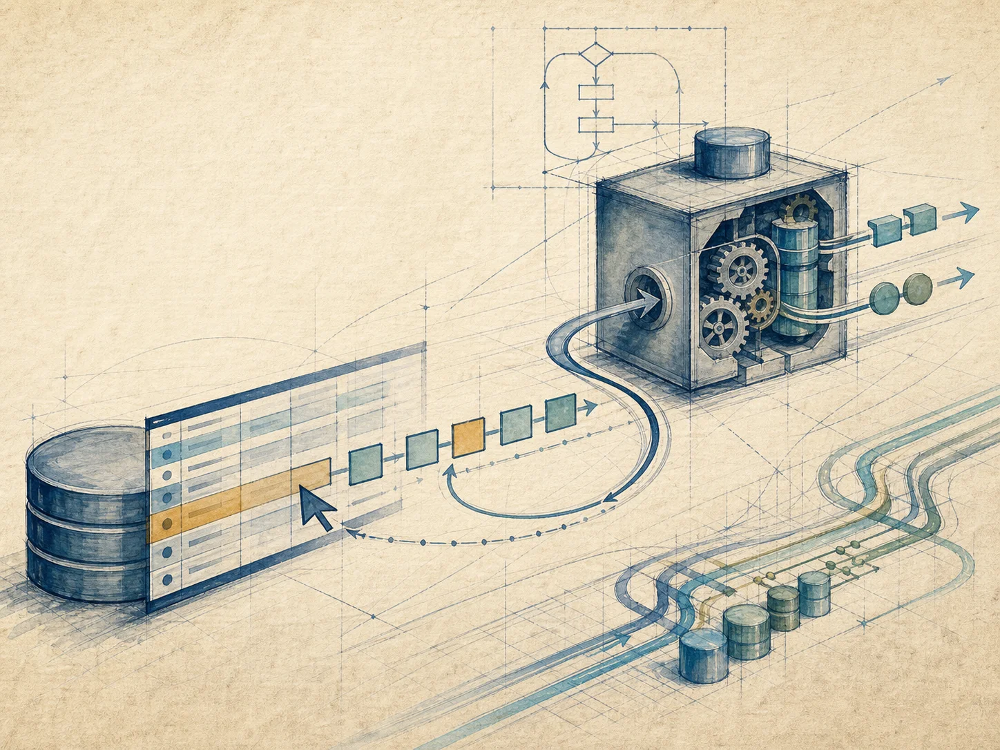

机制选择
若一个聚合查询即可得到结果，就不用游标；GPA 也能集合计算，本节用它练习游标状态

游标逐行读取成绩，存储程序接收学号并返回 GPA
 VER. 2608
Built with impress.js
VER. 2608
Built with impress.js
写清 GPA 程序每次读哪行、何时停和关闭、学号怎样传入、结果怎样返回
聚合和分支可用集合 SQL 表达；游标用于需要显式逐行控制的计算
| 任务 | 集合表达 | 何时考虑过程控制 |
|---|---|---|
| 按学院统计人数 | GROUP BY 与 COUNT | 通常不需要游标 |
| 按分数段计算 GPA | CASE 换算、SUM 汇总 | 本节用游标追踪取数 |
| 每步依赖上一步结果 | 窗口函数或递归 | 集合表达不清楚时，设计逐行步骤 |
游标 Cursor 从查询结果中逐次提取一行，供过程代码处理
使用 8.1 的 GPA 独立样例；学号为 20180001，每课只含一条成绩
01
02
03
04
05SELECT c.Credit, sc.Grade
FROM SC sc JOIN Course c
ON sc.Cno = c.Cno
WHERE sc.Sno = '20180001'
ORDER BY sc.Cno;| Cno | Credit | Grade |
|---|---|---|
| 81001 | 4 | 85 |
| 81002 | 4 | 96 |
| 81003 | 4 | 87 |
读出顺序为 (4,85)、(4,96)、(4,87)；本例不涉及重修取舍，不与上一节两班均分样例混用
声明关联查询，OPEN 准备提取，FETCH 取下一行，CLOSE 释放资源
| 操作 | 本例发生什么 | 能否处理一行？ |
|---|---|---|
| DECLARE | 将 cur 与前页 SELECT 关联 | 尚未打开 |
| OPEN | 准备该学生的查询结果 | 还没有成功 FETCH |
| FETCH | 将 Credit、Grade 放入变量 | 先确认本次取得了行 |
| CLOSE | 结束本次游标使用并释放资源 | 后续不再提取 |
本节讨论显式管理的游标；某些产品或语法可自动管理部分步骤。结束状态的表示方法须按目标 DBMS 确认
目标列 Credit、Grade 依次对应 v_credit、v_grade
| FETCH 次数 | 本次取得的行 | 累计学分绩点 | 下一步 |
|---|---|---|---|
| 第 1 次 | (4,85) | 12 | 再提取 |
| 第 2 次 | (4,96) | 28 | 再提取 |
| 第 3 次 | (4,87) | 40 | 再提取 |
| 第 4 次 | 没有新行 | 仍为 40 | 退出并关闭 |
无新行时，变量可能保留 (4,87)；误算旧行会把分子加到 52、分母加到 16
以下是产品中立的控制流示意，TRY／FINALLY 需按 DBMS 的错误处理机制改写
01
02
03
04
05
06
07
08
09声明 cur，并设 opened = false
TRY
OPEN cur；opened = true
LOOP
FETCH cur INTO v_credit, v_grade
若没有新行：退出循环
校验本行，换算绩点并累加
FINALLY
若 opened：CLOSE cur取数或计算出错时，清理已打开游标并报错；GPA 仅在完整计算成功后返回
存储过程 Stored Procedure 是由 DBMS 保存的可调用程序对象
| 时刻 | compGPA 的程序定义 | 本次游标与累计变量 |
|---|---|---|
| 创建过程 | 保存参数和过程体 | 尚未计算某个学生 |
| 调用 20180001 | 使用已有定义 | 新建状态，从 0 累计 |
| 调用结束 | 定义保留供下次调用 | 本次游标关闭 |
| 改查其他学号 | 仍可使用该定义 | 重新初始化累计值 |
CREATE 定义对象，CALL 发起一次调用，修改或替换需检查旧调用者，DROP 删除定义；具体语法随 DBMS 不同
参数模式说明调用者与程序之间的数据流向
| 模式 | 调用前 | 程序做什么 | 调用者取得什么 |
|---|---|---|---|
| IN | 学号 20180001 | 读取该学生成绩 | 不回传参数修改 |
| OUT | 提供接收变量 g | 计算并赋值 3.33 | g＝3.33 |
| INOUT | 总量变量 t＝12 | 将本轮 16 累加到 t | t＝28 |
INOUT 的 t 属于另一累加程序。IN 只表示单向传入；内部变量是否只读，要看产品规则
本例 compGPA 只读取 SC 与 Course，输出保留两位小数
01
02
03
04
05compGPA(IN p_sno, OUT p_gpa)
输入：学生学号，如 20180001
取数：按 p_sno 连接 SC 与 Course，得到 Credit、Grade
累计：分子、分母均从 0 开始；换算规则沿用 8.1
输出：有效学分为 0 时返回 NULL，否则返回加权 GPA本例规定：Grade 为 NULL 时不计入分子和分母；非整数或超出 0—100、学分非正或缺失时报错。出错时不把部分累计值当作 GPA 返回
本例正常结果为 3.33。调用者只拿到 p_gpa，不依赖过程内部的游标名或累计变量名
将 96 改为 NULL 或 101；再预测无选课、学分为 0 的结果
| 输入变化 | 预期结果 | 判断依据 |
|---|---|---|
| 三门课仍为 85、96、87，各 4 学分 | 3.33 | 40÷12，保留两位 |
| 该学号没有任何选课记录 | NULL | 有效学分为 0 |
| 将 96 改为 NULL，其余不变 | 3.00 | 跳过整条，24÷8 |
| 将 96 改为 101，或学分改为 0 | 报错 | 输入不符合约定 |
若第四次 FETCH 后仍误算旧行，会得到 52÷16＝3.25；错误结果看似合理，因此要同时核对读了几行和两个累计值
本例两个接口都只读取数据，调用语法是概念示意
01
02
03过程：CALL compGPA('20180001', g) → g = 3.33
函数：SELECT calcGPA('20180001') → 结果值 3.33
函数的返回类型：DECIMAL(4,2)| 对象 | 调用者怎样取结果 | 本例用途 |
|---|---|---|
| 存储过程 | 读取 OUT 参数 g | 应用发起一次调用并显示结果 |
| 存储函数 | 读取表达式结果 | 将 GPA 作为查询中的一个值 |
存储函数 Stored Function 需声明返回类型。函数能否写表、能出现在哪类语句中，仍须按目标 DBMS 核对
课堂假设：一次查询或调用计一次请求，不计连接和登录
| 应用怎样取得 GPA | 请求数 | 返回应用的数据 |
|---|---|---|
| 先查 3 条成绩，再逐课查学分 | 4 | 3 条成绩＋3 条学分 |
| 一次 JOIN 取回，再由应用计算 | 1 | 3 行成绩与学分 |
| 一次 CALL，由过程计算 | 1 | 1 个 GPA 值 |
JOIN 与 CALL 均为一次请求；过程内 FETCH 不产生逐行客户端请求。耗时取决于执行计划、数据量和网络
原 compGPA 只读两张表；假设新版另向 GPA_Audit 写一条调用记录
| 检查项 | 旧版只读计算 | 新版增加日志写入 |
|---|---|---|
| 读写对象 | 读取 SC、Course | 还写 GPA_Audit |
| 调用权限 | 满足执行与读取要求 | 核对日志写入权限及执行身份 |
| 失败处理 | 非法输入就报错 | 日志写入失败后怎样返回？ |
| 事务责任 | 不修改业务数据 | 日志提交的时机与责任方（过程或应用） |
新增写入后要重测权限、失败处理与事务，即使输出参数没有变化
说明取数、结束与关闭、参数传递、异常处理，并比较集合计算方案
若一个聚合查询即可得到结果，就不用游标；GPA 也能集合计算，本节用它练习游标状态
声明 GPA 查询，打开后反复 FETCH；每次先检查结束状态再处理，正常与异常出口都关闭资源
IN p_sno 指定学生，OUT p_gpa 返回结果；列顺序映射到变量，本例缺失成绩跳过，非法输入报错，无有效课程返回 NULL
写清读写哪些表、会触发哪些额外操作、怎样提交或回滚、谁能调用，并测试升级和大数据量情况；再决定使用过程、函数或显式应用流程